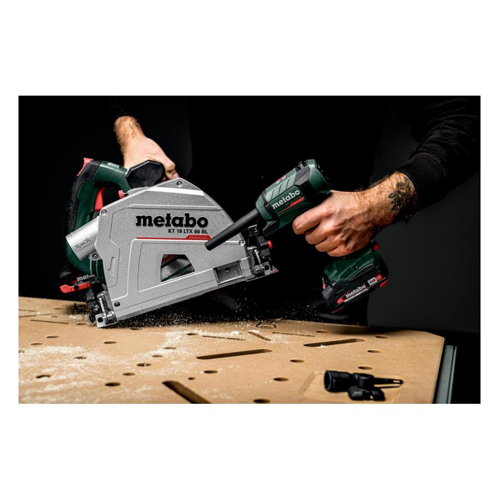
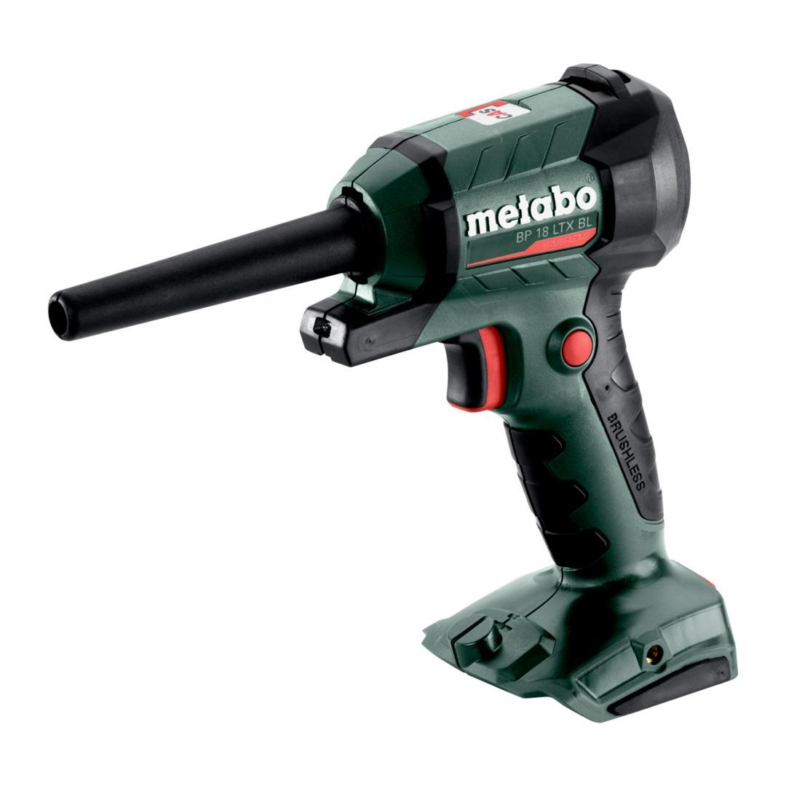
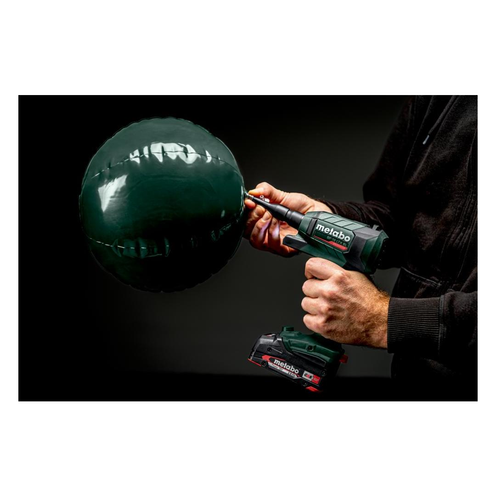
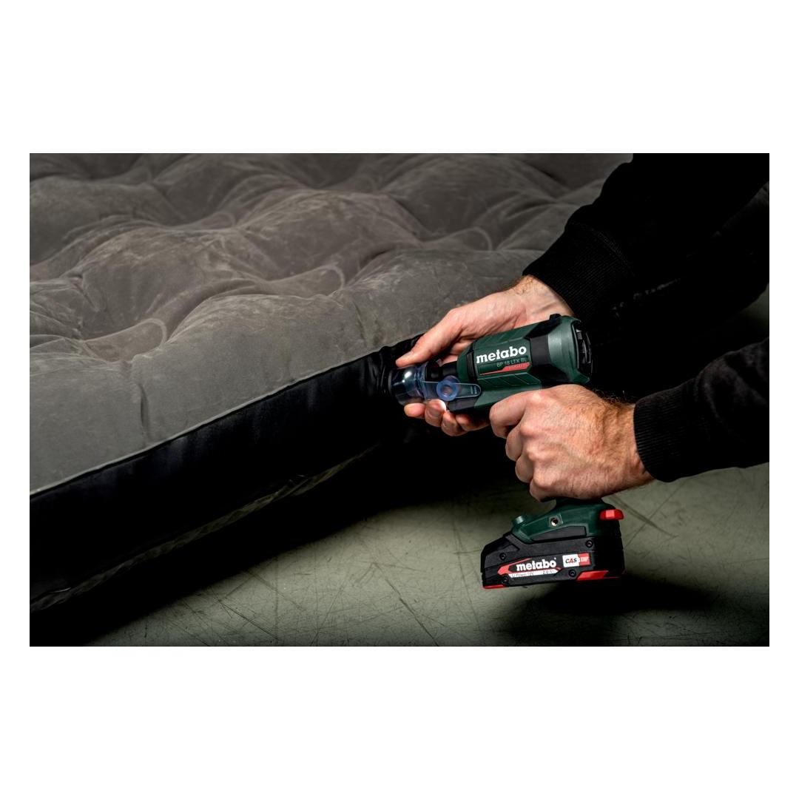
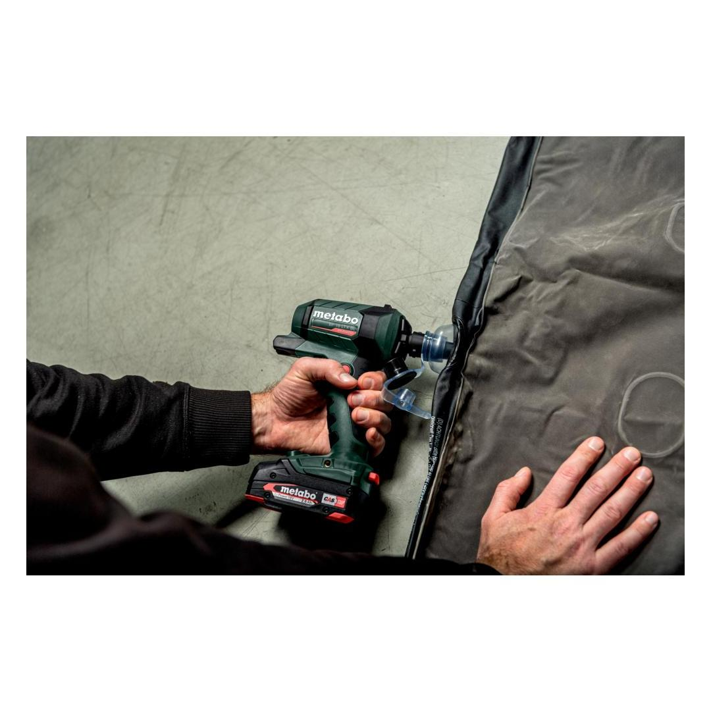
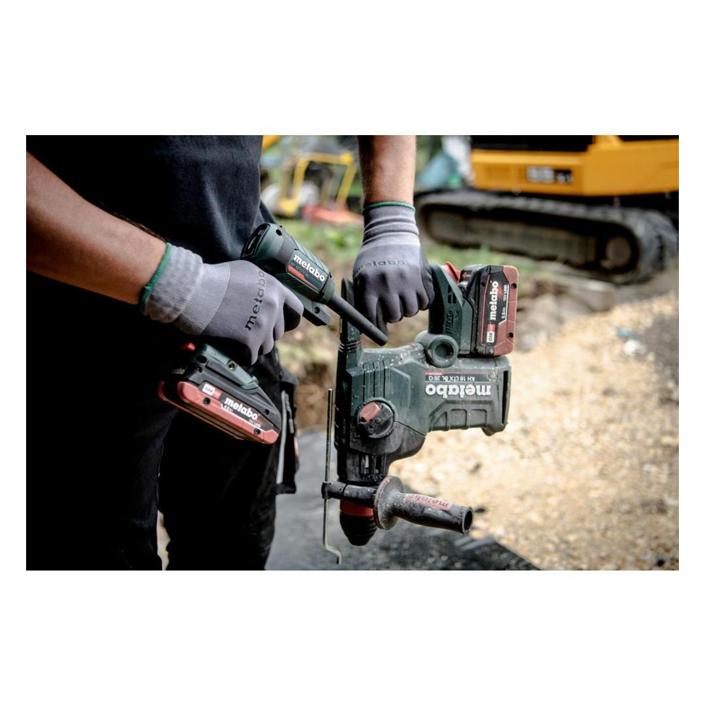
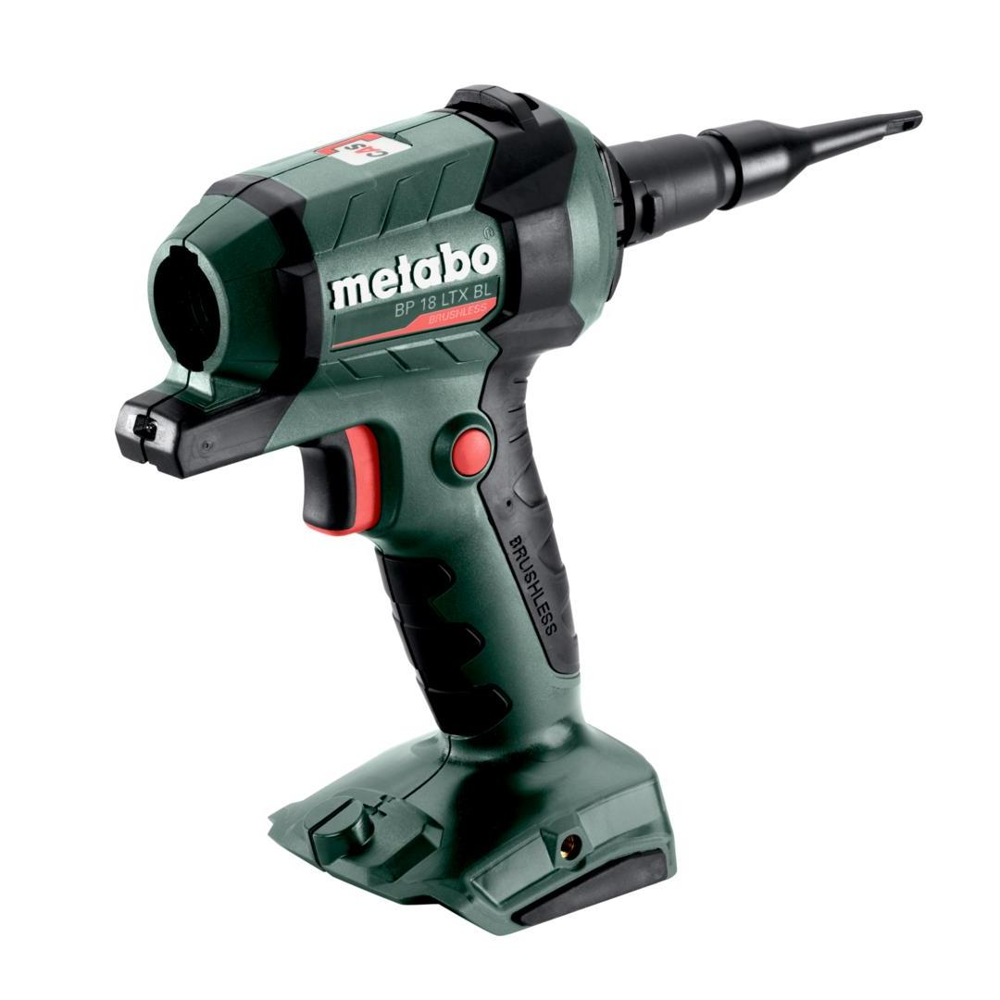
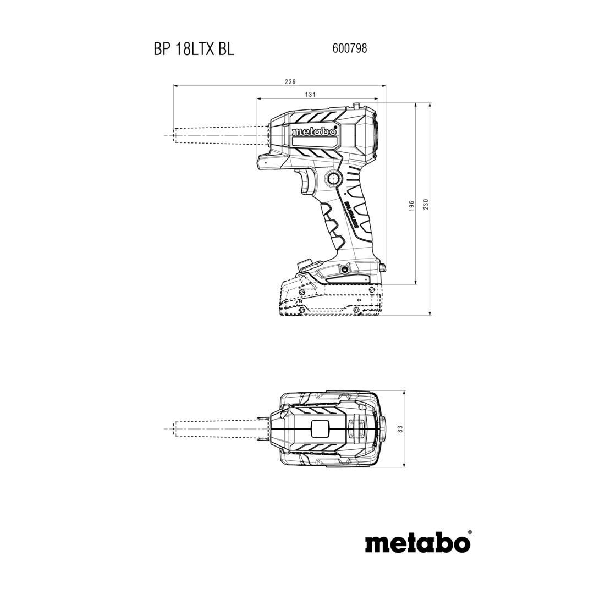

Metabo | MACHINE ONLY! Blow Tube Extension Included
600798850











| Air volume | 0.7 m³/min // 24.5 cfm |
| Max. air velocity | 122 m/s / 400 ft/min |
| Weight with battery pack | 0.8 kg / 1.8 lbs |
Product Description
- Powerful and versatile cordless blow gun with powerful airflow for cleaning, blowing out, inflating and venting
- High air velocity for efficient blowing out thanks to Brushless motor and turbine technology
- Wide range of applications: Blowing clean of workpieces, machines and workspace, inflating and deflating of inflatable products
- Stepless adaptation of the air velocity with comfortable vario switch
- Switch lock for user-friendly working in continuous mode
- Integrated LED work light with afterglow function for optimal brightness in the work area
- Fixing option for loop or ring of a spring balancer or a tool securing device
- Nozzles and adapters for all application areas included in the scope of delivery
- Many brands, one battery pack system: This product can be combined with all 18V battery packs and chargers of the CAS brands: www.cordless-alliance-systems.com
Product Highlights
Brushless MotorBrushless Motor
Unique Metabo brushless motor for quick work progress and highest efficiency for any application
CAS, the multi-brand battery systemCAS, the multi-brand battery system
100% compatibility of machine, battery packs and chargers of one volt class – from Metabo and other brands. Discover now at www.cordless-alliance-system.com
Technical Details
KEY FIGURES| Battery voltage | 18 V |
| Air volume | 0.7 m³/min // 24.5 cfm |
| Max. air velocity | 122 m/s / 400 ft/min |
| Weight without battery pack | 0.4 kg / 0.9 lbs |
| Weight with battery pack | 0.8 kg / 1.8 lbs |
VIBRATION| Vibration | 0.1 m/s² |
| Uncertainty of measurement K | 1.5 m/s² |
NOISE EMISSION| Sound pressure level | 90 dB(A) |
| Sound power level (LwA) | 90 dB(A) |
| Uncertainty of measurement K | 3 dB(A) |
Scope of delivery
| Nozzle kit (3-pieces) |
| Nozzle adapter |
| without battery pack, without charger |